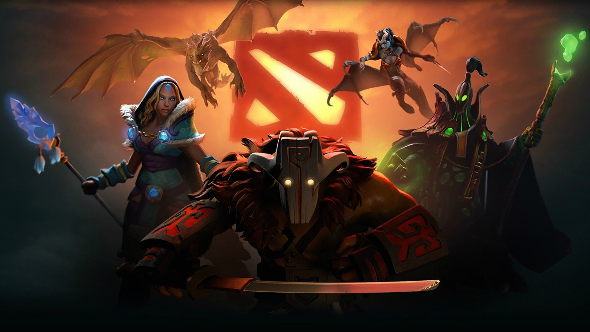
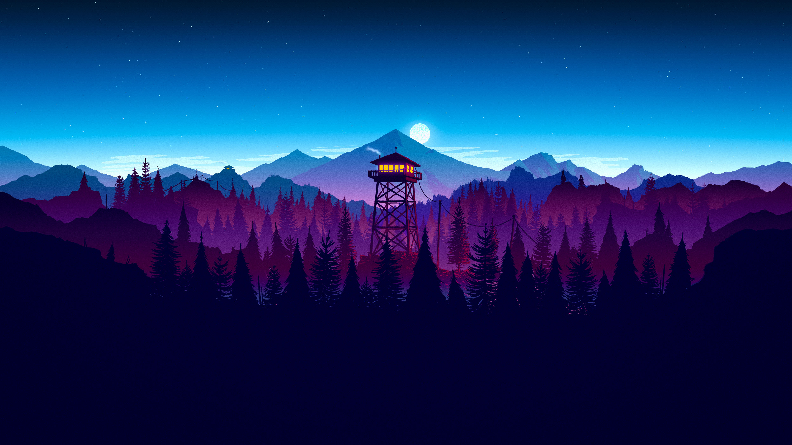

Hi, I'm Prince —
I build things for the web.
Full Stack MERN Developer
Full stack developer working across the MERN stack. I like problems where the frontend has to stay responsive while something real is happening underneath — live sockets, streaming media, market data.
A bit about me
I'm Prince Kumar Singh, a full stack developer and NIT Jamshedpur graduate. Most of what I build sits on the MERN stack — React on the front, Node and Express behind it, MongoDB underneath.
The projects I enjoy most are the ones with moving parts: a chat app that has to keep sockets and typing indicators in sync, a music player juggling playlists and playback state, a dashboard redrawing charts as live market data lands.
Before web development I spent a lot of time on competitive programming in C++, which is still where my instincts about data structures and complexity come from.
Selected projects
Things I've designed, built and deployed. Live demos where they're still hosted, source on GitHub for the rest.
Skills & technologies
What I reach for when building.
Languages
Frontend
Backend
Data & tooling
A few of my pastimes


Let's build something.
I'm open to full stack roles and freelance work. The fastest way to reach me is email.
bediprince62@gmail.com